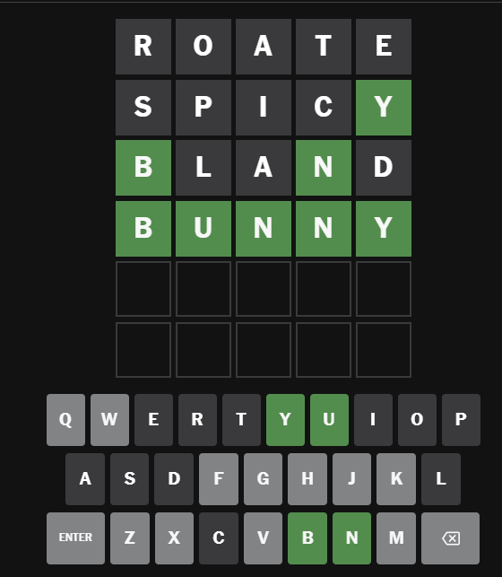

Engineering Project
Wordle Solver
Finds the best word to play in the NYT's game "Wordle".
- Languages
- Python
- Skills
- Information Theory, Computational Modeling

Overview
Wordle is a game that is played by making guesses as to what a secret five-letter word is. Each guess highlights letters based on how correct they are; Gray means the letter is not in the word, green means the letter is in the word and the right location, and yellow means the letter occurs elsewhere in the word. Players have six guesses to correctly guess the word.
This was a programming project that determines the best word to play in a given case in Wordle.
Process
The program works by creating a list of all possible combinations of letters for each possible word (there's a list of over 2,000 possible words that can be found here →).
These combinations are then used to determine how many words would remain should that combination show. Then, the program determines what word expects to reduce the possible remaining word list the most. This reduction is measured in bits of infomation where a bit of information is enough to reduce a dataset in half
Repository
- If you would like to look at the code, try to run it yourself, or look at the word list it created, you can find the repository for this project here →